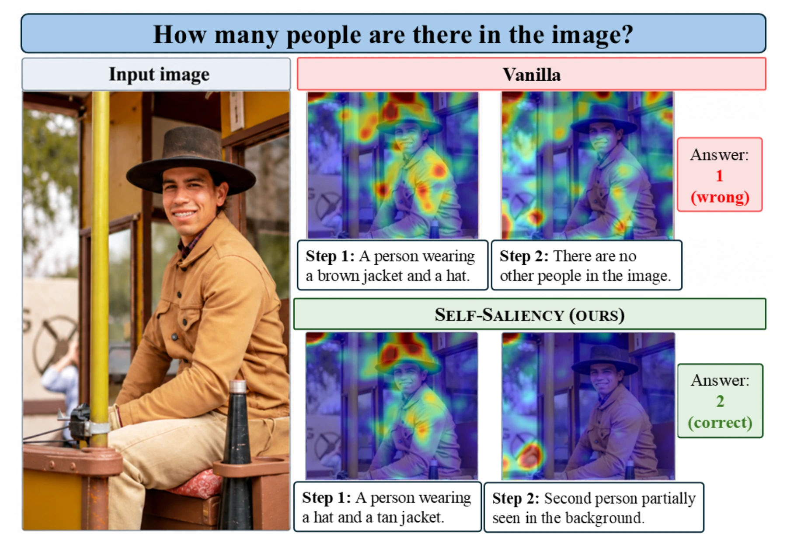

Look Where You Say You’re Looking
Self-Grounded Attention for Visual Reasoning
Preprint · under review
1Affiliation One 2Affiliation Two
One chain, step by step
The idea

Abstract
We introduce Self-Saliency, a method for training Vision-Language Models (VLMs) to increase the alignment between their visual attention and the image regions mentioned in their reasoning. Self-Saliency uses a grounding model to localize the objects mentioned in each reasoning step and treats the resulting areas as supervision for the model's visual attention. Previous work on steering visual attention determines target image regions based solely on the image and question. In contrast, we show that conditioning the target regions on the model's generated reasoning improves downstream performance.
For proper evaluation, we build a unified, broad suite of 25 visual reasoning benchmarks, where we reproduce the results of previous methods. We find that Self-Saliency significantly outperforms both prior attention-steering methods and baselines that ground image-level text, achieving both a better average rank, and better mean score. Post-training analysis shows that the model primarily adapts its reasoning text to existing attention patterns, producing shorter steps that refer to larger regions. Nevertheless, when controlling for generated text, attention to grounded regions increases significantly across the relevant layer.
Finally, we identify a consistent geometric bias in VLM visual attention toward the image border. However, our ablations show that Self-Saliency's gains cannot be explained by simply aligning attention with the center of the image, highlighting the importance of aligning visual attention with the regions mentioned in the model's reasoning.
Method
The supervision signal comes from the policy itself. Every rollout is segmented into atomic reasoning steps; the steps that describe an observation about the image are scored, and the rest are ignored.
- Localize. A phrase-grounding model (Grounding-DINO) runs on the text of each observation step. The union of its boxes is that step's grounded region us.
- Extract. The attention that the step's generated tokens pay to each image patch, from two selected heads, averaged over the step, is that step's saliency map sals.
- Score. The saliency score is the mean saliency inside the grounded region, normalized by the peak saliency anywhere in the image.

Training
The mean score over a chain's observation steps becomes a GRPO reward term, added to a direct-match accuracy reward, an LLM-as-a-judge reward and a format reward (αsal = 0.4, all others 1). The policy is Qwen3-VL-8B-Instruct, cold-started with SFT on LLaVA-CoT and Mulberry-SFT, then trained with GRPO (group size 8) on Saliency-R1-8K.
The saliency reward reads two attention heads — layer 22, heads 28 and 31 — picked by correlating each head's saliency score with model accuracy on Visual-CoT. A run takes about 46 hours on one node of eight H100s: six hold the policy, one serves generation with vLLM, one hosts the grounding model.
Results
- Mean score
- 64.3Best of seven methods
- Mean rank
- 3.02Lowest — 1 is best
- Benchmarks won
- 9of 25; next best is 6
The suite is deliberately broad. VGA, Saliency-R1 and EASE evaluate on 3, 10 and 11 benchmarks respectively, with only one benchmark shared across all three — so we evaluate on the union of everything recent work uses, plus several newer benchmarks, and reproduce each baseline ourselves.
| No attention intervention | Prior work | Ours | |||||
|---|---|---|---|---|---|---|---|
| Benchmark | Qwen3-VL 8B-Instruct |
Coldstart | No-Sal | VGA | Saliency-R1 | EASE | Self-Saliency |
| AlgoPuzzleVQA | 32.8 | 36.9 | 39.9 | 34.3 | 38.7 | 36.4 | 41.4 |
| ChartQA | 85.0 | 88.8 | 89.4 | 84.9 | 89.7 | 88.9 | 90.0 |
| CV-Bench | 86.0 | 83.4 | 84.9 | 86.1 | 83.8 | 84.2 | 85.9 |
| DailyClue | 35.4 | 32.4 | 34.2 | 34.2 | 32.0 | 32.7 | 31.2 |
| HallusionBench | 63.2 | 59.7 | 57.1 | 62.0 | 58.3 | 62.6 | 55.7 |
| HR-Bench 4K | 78.0 | 76.9 | 77.4 | 78.1 | 78.9 | 76.9 | 79.5 |
| HR-Bench 8K | 74.1 | 72.9 | 72.0 | 74.2 | 76.0 | 72.8 | 74.5 |
| IllusionVQA | 40.0 | 41.9 | 41.5 | 40.1 | 43.8 | 40.5 | 43.5 |
| LogicVista | 52.5 | 54.9 | 55.1 | 51.3 | 56.5 | 52.9 | 56.2 |
| MathVerse | 34.4 | 51.0 | 52.8 | 33.8 | 49.5 | 50.4 | 50.9 |
| MathVision | 29.6 | 33.5 | 37.5 | 31.2 | 33.9 | 35.9 | 41.5 |
| MathVista | 73.5 | 69.5 | 71.8 | 73.8 | 71.0 | 70.0 | 70.4 |
| MME | 2375.9 | 2371.7 | 2376.1 | 2379.8 | 2395.7 | 2395.4 | 2355.1 |
| MME-RealWorld | 63.7 | 64.2 | 66.7 | 63.8 | 66.4 | 65.1 | 68.7 |
| MMK12 | 68.2 | 63.1 | 62.3 | 67.9 | 61.1 | 63.1 | 62.0 |
| MMMU-Pro | 40.4 | 48.6 | 48.6 | 41.9 | 47.7 | 47.1 | 48.4 |
| MMStar | 64.0 | 69.8 | 70.9 | 64.7 | 69.9 | 69.5 | 69.6 |
| OmniSpatial | 47.4 | 50.3 | 48.2 | 46.8 | 50.2 | 50.2 | 51.0 |
| SalBench | 43.3 | 60.7 | 59.8 | 43.3 | 62.7 | 58.6 | 64.7 |
| POPE | 88.8 | 87.4 | 88.2 | 88.8 | 88.5 | 88.5 | 88.9 |
| RealWorldQA | 68.5 | 67.1 | 67.8 | 68.4 | 68.8 | 67.5 | 68.2 |
| ScienceQA-IMG | 94.4 | 96.3 | 97.2 | 94.4 | 97.6 | 96.2 | 97.4 |
| VisuLogic | 26.6 | 24.9 | 24.8 | 26.4 | 24.9 | 24.4 | 24.4 |
| V* | 84.3 | 79.6 | 79.6 | 85.3 | 80.6 | 81.2 | 82.7 |
| WeMath | 69.4 | 68.6 | 74.3 | 68.2 | 73.8 | 71.1 | 75.5 |
| Mean score ↑ | 61.1 | 62.7 | 63.5 | 61.2 | 63.6 | 62.9 | 64.3 |
| Mean rank ↓ | 4.42 | 4.64 | 3.68 | 4.48 | 3.26 | 4.50 | 3.02 |
| Wins ↑ | 4 | 0 | 3 | 3 | 6 | 0 | 9 |

What training actually changes
The model can raise the reward two ways: by writing reasoning that is easier to ground and already well attended, or by moving attention onto the regions it describes. To separate them we teacher-force both the cold-start checkpoint and the trained model on the same 200 reasoning chains, so the text is held fixed and only attention can move.
Text does most of the work: the trained model writes chains a third shorter that refer to larger regions. With the text held fixed, in-region attention does not rise in the two heads the reward reads. Averaged over all of layer 22, though, it does rise, significantly (p < 0.001).
| Text-related | Attention-related | |||
|---|---|---|---|---|
| Completion length | Box union area | In-region share (selected heads) |
In-region share (layer-22 heads) |
|
| Coldstart | 230.0 | 0.533 | 0.462 | 0.612 |
| Self-Saliency | 149.6 | 0.566 | 0.462 | 0.621 |
Attention piles up on the image border
Across four instruction-tuned VLMs, visual attention is enriched along the geometric border of the image and depleted in the center — and in every model the single most enriched patch sits in a corner. Human annotators marking the regions that matter for answering the question do the opposite.
| Model | En border ring | En center | Largest En |
|---|---|---|---|
| Qwen3-VL-8B-Instruct | 1.20 | 0.92 | Top left, 6.64 |
| InternVL3.5-8B | 1.18 | 0.95 | Bottom left, 2.29 |
| GLM-4.1V-Thinking | 1.50 | 0.82 | Top right, 7.79 |
| Nemotron-Omni | 1.43 | 0.87 | Top right, 3.86 |
| Human boxes | 0.53 | 1.14 | Non-border, 1.87 |


It is the chain, not the center
Two variants change only where the target boxes come from. Center rect uses a fixed rectangle in the middle of the image — if that matched Self-Saliency, the gains would just be “attend away from the corner”. Question boxes grounds the input question instead of the model's own reasoning steps — testing whether chain-level grounding beats image-level text. Neither closes the gap.
| Qwen3-VL-8B Instruct |
Coldstart | No-Sal | Center rect | Question boxes | Self-Saliency | |
|---|---|---|---|---|---|---|
| Mean score ↑ | 61.14 | 62.69 | 63.47 | 63.39 | 63.33 | 64.26 |
| Mean rank ↓ | 3.90 | 4.06 | 3.34 | 3.68 | 3.38 | 2.64 |
| Wins ↑ | 7 | 0 | 3 | 2 | 5 | 9 |
BibTeX
@article{TODO_selfsaliency,
title = {Look Where You Say You're Looking:
Self-Grounded Attention for Visual Reasoning},
author = {TODO},
journal = {arXiv preprint arXiv:TODO},
year = {2026}
}